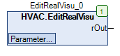

EditRealVisu (FB)¶
FUNCTION_BLOCK EditRealVisu
Short Description¶
Input of a numeric value with input limits (visualization)Typical application: Input of a setpoint temperature in the visualizationSpecial feature: Min/Max inputs, unit, decimal places and other parameters are parameterized directly in the CFC Editor and not in the visualization object.This allows changes and limits to be changed online in the application without downloading. |
Portrayal¶

Interfaces¶
Output¶
Name Datatyp
Range
Initial value
Function
rOut REAL Numerical output value
Setpoints / Parameter¶
Name Datatyp
Range
Initial value
Function
xDisableSeparator BOOL FALSE TRUE = Deactivates the thousand separator characters when displayed in the visualization.
bDecimals BYTE 1 Number of decimal places
sDialogTitle STRING Dialog title of the input value
sUnit STRING Unit of the input value
rMaxInputVisu REAL 100.0 Upper input limit of the input value
rMinInputVisu REAL 0.0 Lower input limit of the input value
rSetPoint REAL 0.0 Numerical input value
Functional Description¶
General¶
Behaviour in the event of a power failure
Visualization¶
Suitable visualization element from the HVACV Visu Library: EditRealVisu
Portrayal¶
Interfaces Visu-Element¶
Name Datatyp
Type
Initial value
Function
rValue FB_EditRealVisu VAR_IN_OUT Enter FB Instance HVAC.EditRealVisu here e.g. PRG.EditRealVisu
iFieldSizeL INT VAR_INPUT 0 Field increases by the number of pixels entered to the left. Needed to display long numbers or units.
iFieldSizeR INT VAR_INPUT 0 Field increases by the number of pixels entered to the right. Needed to display long numbers or units.
The following entries of the FB HVAC.EditRealVisu are automatically taken over and can be changed during runtime: rMinInputVisu, rMaxInputVisu, sUnit, sDialogTitle, bDeicmals, xDisableSeperator | | Note: VAR_IN_OUT interfaces must be occupied, VAR_INPUT are optional. | |
Codesys¶
- InOut:
Scope Name Type Initial Comment Input xDisableSeparator BOOL TRUE = Deactivates the thousand separator characters when displayed in the visualization.
bDecimals BYTE 1 Number of decimal places
sDialogTitle STRING Dialog title of the input value
sUnit STRING Unit of the input value
rMaxInputVisu REAL 100 Upper input limit of the input value
rMinInputVisu REAL 0 Lower input limit of the input value
rSetPoint REAL 0 Numerical input value
Output rOut REAL Numerical output value